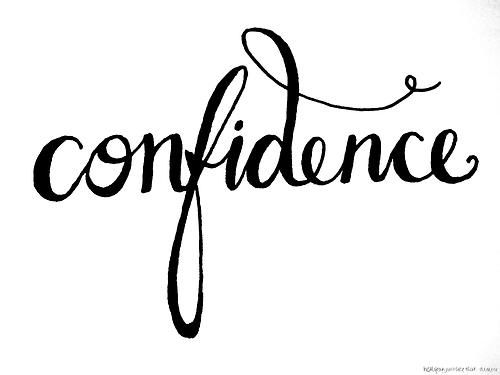
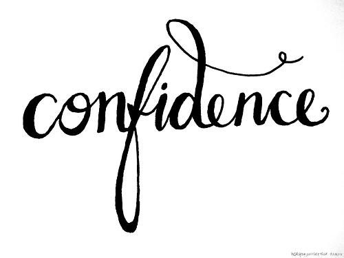

Description of My Final Digital Fabrication Project.
1. Describe your project. My project was to create an entire outfit. I designed a two piece dress which I would sew from just pieces of fabric I found in the Maker Space. The two pieces of fabric was a brown old fashion looking cloth and a light weight gold fabric that looks as though it could be bed sheets. My project was also to create a leather bracelet and put an engraved design on it to go with the top and skirt. For the entire project I spent around 10 hours creating this dress and bracelet including all the design and production work. The settings and configurations I used on the sewing machine was varied based on which part of the garment I was doing relative to speed but the stitch was always on one. For Corel Draw I turned the image into a bitmap and set it to the dimensions of the bracelet. I took the CorelDraw file to the laser engraver and brought over a leather bracelet in the Maker Space. Then using the bracelt I focused the machine and then made sure the bracelet was at the top corner. I then proceeded to print the design after putting in the preference setting for the dimenisions and what the speed and power of laser should be for a 1/8" of leather. From this project I learned how to make a two piece dress from just two pieces of fabric. Overall I really enjoyed my final project because I love designing clothes and making this from basically nothing.